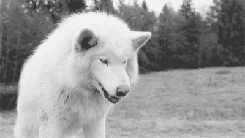

Le nucléaire
Les écologistes veulent sortir du nucléaire, OK, mais ils s’opposent aux éoliennes, à la méthanisation, à l’utilisation des centrales à charbon, au fuel et au chauffage au bois. Mais ils exigent des locaux climatisés, des ascenseurs et la domotique partout, chez eux comme au travail.
Ils veulent limiter la consommation de produits pétroliers pour lutter contre le réchauffement climatique.
Ok, je suis d’accord avec eux, mais parce qu’il faut arrêter de financer les pays du Moyen Orient qui, avec l’argent qu’on leur donne, achètent nos ports, nos aérodromes, donc nos infrastructures vitales pour pouvoir ensuite nous imposer leur culture et leurs lois.
En Charente-Maritime, les écologistes s’opposent à la création de réserves d’eau, au projet de parc éolien à 15 km au large d’Oléron et à deux projets de méthanisation sur Royan.
Alors, comment faire sans le nucléaire ?
Les loups en ville
A plusieurs reprises, les loups ont poursuivi leur proie jusqu’au cœur d’une agglomération des Alpes et y ont dévoré une biche sur place.
Les écologistes ont répandu la légende que les loups et les requins n’attaquaient pas l’Homme. Ils ont une attitude négationniste sur les récits des trappeurs du Grand Nord quand ils arrivaient à survivre, et ils se moquent des craintes du loup par les paysans.

Les réunionnais ont fini par admettre que les requins étaient dangereux et qu’il fallait protéger les plages par des filets, comme l’étaient déjà les plages de Madagascar en 1954.
Il faudra que les loups mangent un écologiste, -pas un enfant ou un paysan parce qu’on dira qu’il aura été imprudent - pour admettre que les loups en meute sont dangereux pour l’Homme, surtout l’hiver.
En effet, en hiver les moutons sont rentrés. Les effectifs d’herbivores sauvages, qui sont leur seule ressource, vont décroître au même rythme que croîtrons les effectifs de loups qui se retrouveront très vite en situation de famine, et dangereux ! Les dégâts répétés sur les moutons, même s’ils sont indemnisés, découragent les éleveurs et surtout les jeunes qui auraient dû reprendre la transhumance.
Pour ces jeunes qui ont pourtant la vocation d’éleveur, l’ambition n’est pas de constater les dégâts et les souffrances horribles des brebis blessées qu’ils doivent achever et remplir les dossiers d’indemnisation.
Même si les écologistes reprochent aux éleveurs de gérer leurs moutons pour les envoyer à l’abattoir, ceux-ci veillent à ce que chaque animal soit bien nourri et vive dans des conditions de confort et de sécurité acceptables.
L’éleveur gère un stock de moutons qu’il peut nourrir et loger dans des conditions saines. Il remplace la génération la plus âgée par des agnelles qu’il a choisies.
Et il gagne sa vie en vendant les agneaux en surplus du renouvellement et les brebis réformées bien nourris dans la quiétude et abattus sans souffrances. Ce qui n’est pas le cas des animaux attaqués par les loups dont les viscères sont dévorés avant que la mort n’intervienne.
Aucun éleveur ne peut conserver tous les jeunes nés chez lui et nourrir des brebis âgées ne produisant plus, qui vieilliraient et agoniseraient sur le flanc pendant des semaines avant de mourir. L’éleveur qui se mettrait dans cette situation serait poursuivi par les Société de Protection des Animaux et condamné pour maltraitance !!!
Si les éleveurs ne sont pas renouvelés, la montagne ne sera plus entretenue et deviendra de plus en plus dangereuse. En effet, l’herbe pâturée crée un petit hérisson qui accroche la neige et limite les avalanches, alors que l’herbe non pâturée, se couche sur le sol en pente et sert de toboggan à la neige.
Nous devons combattre deux légendes :
D’une part, la multiplication des meutes de loups, ne correspond pas à la multiplication des herbivores. En fait, l’équilibre entre les proies et les prédateurs est fragile et se règle par la famine des prédateurs s’ils éliminent trop de proies. Dans cette extrémité, les chiens et les humains suppléeront les herbivores disparus dans le menu des loups.
D’autre part, le loup ne s’attaque pas à l’homme selon les écologistes !
C’est probablement vrai pour le loup solitaire, mais une meute affamée peut être terriblement agressive. Les historiens rapportent qu’en 836, au cours d’un hiver rigoureux, 300 loups ont ravagé l’Aquitaine. Les paysans logeant dans des cabanes disjointes avec leurs chèvres et leurs moutons ont dû souvent faire aussi partie du repas des loups.
Jusqu’en 1850, les Rochefortais étaient terrorisés par les hurlements des loups la nuit dans les bois du Vergeroux.
Alors, se moquer de la peur ancestrale du loup est facile.
Si c’est vraiment un animal inoffensif pour l’homme, pourquoi ne pas le réintroduire à Paris, par exemple dans le Parc Monceau, le Parc Montsouris ou le Bois de Boulogne pour détruire les millions de rats qui y prospèrent ?
Les écologistes souhaitent la mort des moustiques et des rats parce qu’ils en sont directement victimes. Pourtant le rat est aussi un animal social très intelligent !
Les éleveurs de moutons pourraient lancer avec succès une pétition dans leurs rangs pour protéger les rats de Paris, …qui ne les gênent pas !
L’exemple des civelles – ou pibales- fait partie des problèmes mal posés :
En effet, les contraintes s’exercent sur les pêcheurs et indirectement sur les consommateurs par le prix, alors que la raréfaction des civelles est due au surnombre des hérons – gris, cendrés et blancs - et des cormorans protégés depuis soixante ans.
Ces oiseaux consomment leur propre poids par jour de poissons et particulièrement d’anguilles dont les œufs donnent les civelles.
La reproduction des anguilles a lieu dans la mer des Sargasses au cœur de l’Atlantique où éclosent les civelles qui remontent jusque vers nos côtes, dans nos rivières et canaux pour devenir anguilles dans nos marais.
Avant la protection des hérons, à l’automne, les anguilles adultes descendaient les canaux et n’hésitaient pas à remonter dans l’herbe des prairies pour contourner une écluse ou un batardeau pour rejoindre l’Océan. C’était la dérivée, dont se souviennent les anciens !
La pêche des anguilles était concédée aux éclusiers, qui géraient le niveau d’eau des marais selon les saisons, en compensation de leur travail.
Au fil des années, cette dérivée a diminué jusqu’à disparaître complètement à la fin du XXè siècle. Ce qui veut dire que les civelles qui remontent chez nous, ne participent plus à la reproduction dans la mer des Sargasses. Les anguilles sont toutes avalées dans nos marais par les hérons, les cormorans et maintenant les ibis, avant d’être adultes. Pas d’œufs, pas de civelles, pas d’anguilles et pas d’œufs.
Il faut vraiment être coupé de la Nature pour refuser de voir cette réalité.
Les hérons blancs, les cormorans et les ibis étaient totalement inconnus dans nos marais, il y a seulement 30 ans.
Comment ne pas admettre que la protection de ces prédateurs entraîne la disparition des anguilles et des civelles !
Tout comme la protection des phoques qui se fait au détriment des morues et celle des requins de l’ensemble des poissons de haute mer !
Les réunionnais ont fini par admettre que les requins étaient dangereux et qu’il fallait protéger les plages par des filets.
Je me souviens que la plage de Diégo-Suarez, à Madagascar était protégée ainsi en 1954.